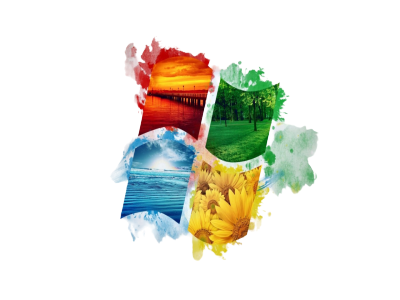
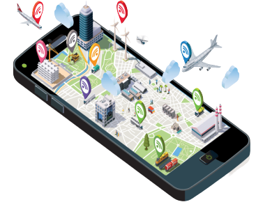

Monitor and control the watering of "Pechay" plants at Binan City Organik Farm using IoT technology.

Nature merging with technology signifies a harmonious integration where the organic world and technological advancements coalesce to enhance sustainability and efficiency.

The benefits of IoT manifest in empowering systems with real-time data and control, revolutionizing how we interact with and manage the environment.

Watering plants becomes a precision-driven process, optimizing hydration levels and fostering healthier growth through intelligent, automated systems.

Smart watering technologies employ data-driven insights and automation to ensure efficient water usage, promoting environmental conservation and plant well-being.
Arduino, a versatile open-source platform, serves as the backbone for innovative projects, enabling seamless integration of sensors for sustainable solutions.